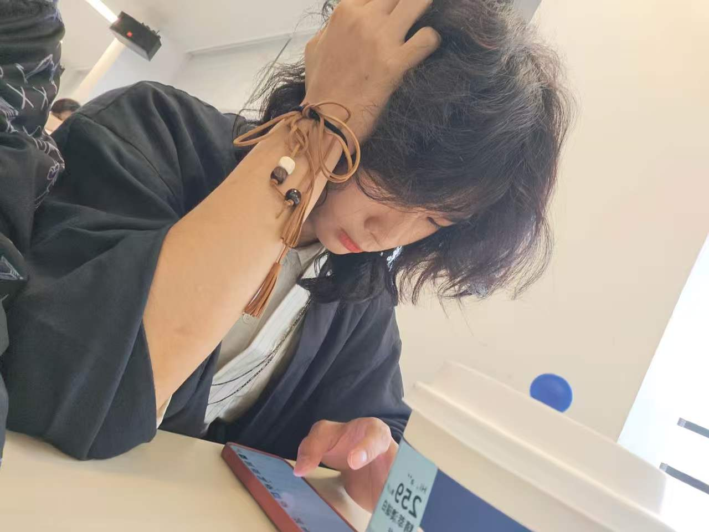

張墨汐
Mohsi · 計算機科學與技術 · 香港浸會大學
Bonjour👋🏻cn Mohsi（汐子）正在學習一些Computer Science
--個人網頁還比較潦草
BNBU
計算機科學與技術
INFJ
Year 1
2025.09
暑期
想找實習(?
News & Updates
2026.05
摸魚中…
教育背景
2025.09 — 至今
香港浸會大學
計算機科學與技術 · 本科一年級 · 全英文上課好難啊...
核心課程：面向對象編程(Java) | C語言 | 離散數學 | 線性代數 | 微積分工程 | Web與系統(HTML/CSS/JS/SQL/Linux)
專業技能
暫時沒什麼用的技能
自學的一些基礎工具
我可以:
- 完整工作週期 — 暑假3個月全職實習，大灣區/合肥本地，出勤穩定
- 科研級自學能力 — 大一主動聯繫教授進入科研組，課外系統性自學Docker、Shell、Git等工程工具鏈
- 文檔與工程習慣 — 全英文教學環境，代碼提交github，學習過程LaTeX記錄習慣
- AI agent工具應用 — 將AI輔助開發融入實踐，了解prompt engineering，使用skills優化工作流
項目與科研經歷
Stable Diffusion 模型改進研究
導師為前南開大學計算機系教授，課題組研究方向為擴散模型優化。
- 獨立完成 FreeU（推理階段特徵調控）與 ConsistStyle（風格一致性增強）兩篇論文的方法復現，基於 PyTorch 搭建實驗環境
- 設計消融實驗，評估兩種方法對生成質量的影響，輸出實驗報告與數據記錄
- 嘗試融合兩種方法的優勢，在保持生成速度的同時提升風格一致性
Adventure Quest — Java Swing RPG 遊戲
基於 Java Swing 的圖形化角色扮演遊戲，面向對象程序設計課程期末作品。
- 角色創建系統：戰士/法師/弓箭手三種職業，各具獨特屬性與技能
- 回合制戰鬥系統（攻擊/防禦/技能），含敵方AI決策邏輯
- 任務系統、商店經濟、背包裝備管理 — 完整遊戲循環
- 遊戲存檔/讀檔（文件I/O持久化）與等級成長系統
- 運用抽象類、接口、繼承、自定義異常等OOP核心設計模式
Web 開發課程項目
全棧Web應用開發課程，使用 HTML/CSS/JS/SQL 完成完整網站搭建。
- 獨立完成前端頁面設計與實現（HTML/CSS 佈局、JavaScript 交互邏輯）
- 設計數據庫表結構，編寫 SQL 查詢實現數據的增刪改查與分頁展示
聯繫方式
Email
moxizhang10@gmail.com
Phone
15989755265
Location
安徽合肥 / 大灣區
University
香港浸會大學
 INFJ
INFJ 07大學生
07大學生